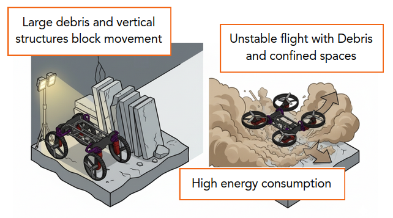
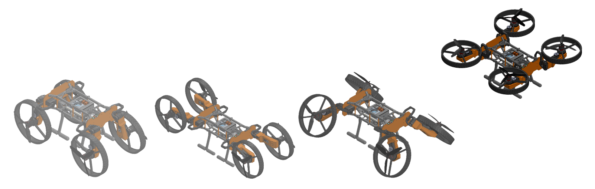
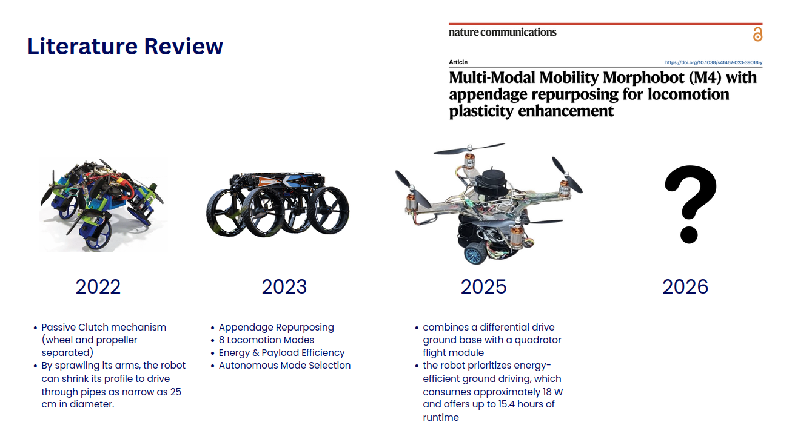
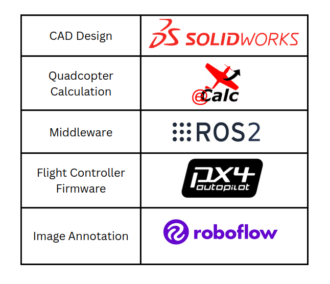
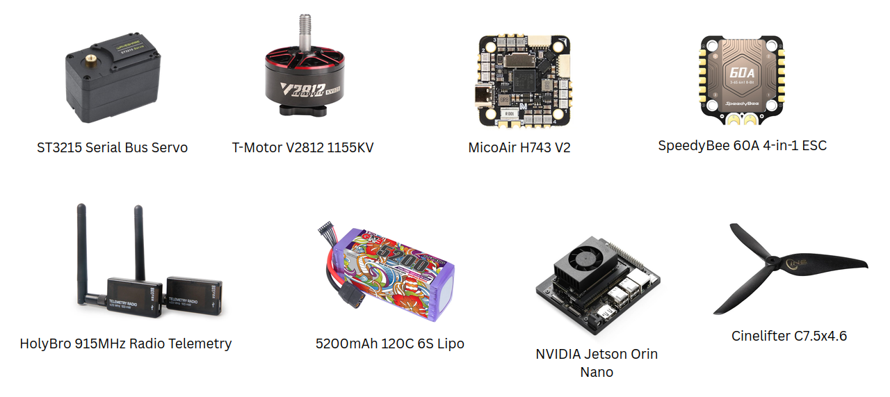
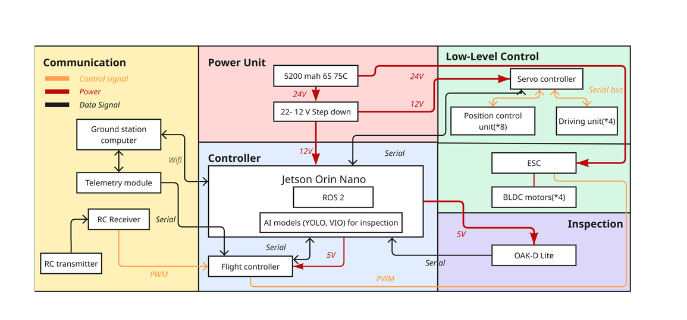
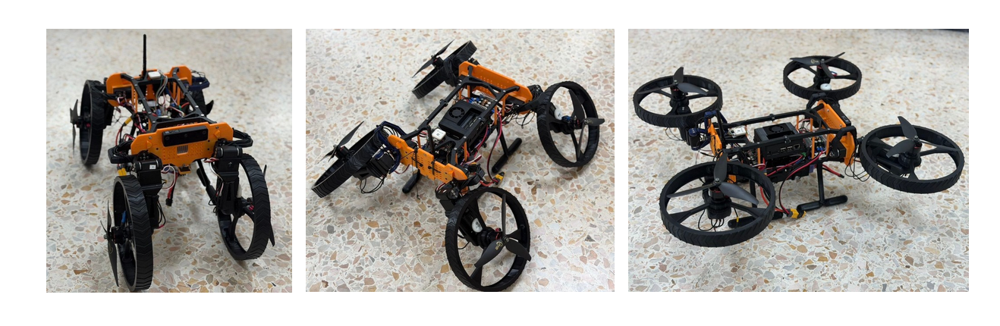
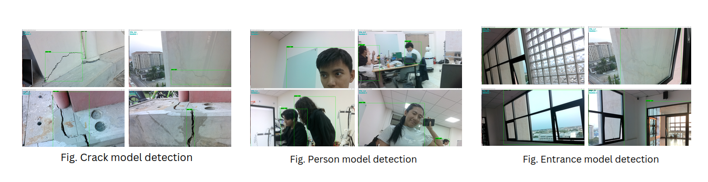

I wanted to build a UAV-UGV robot and had no idea how. This is less about robots and more about how I got unstuck and keep it going.
UAV-UGV combines an unmanned aerial vehicle (UAV) with an unmanned ground vehicle (UGV), allowing transformation to travel as a drone and mobile robot.
" The motivation for this project came from the 2025 Myanmar earthquake, where collapsed buildings made inspection difficult and dangerous. A ground robot may not be able to cross rubble, while a drone alone has high enery consumption and instability in cluttered environments "


ROUTE MAP
I didn't know what parts I needed or what to even google first. The blank-page feeling was the worst part. So, I look for the existing similar research. These are the questions I studied:

After spending two months researching and learning new tools without really knowing where the project would go, we decided to define objectives and scope. This helped us understand what we wanted to achieve and stick to the plan.
After defining the scope, I have to do background research again.

Organize the project into three main areas: hardware, electrical, software integration.
learn

learn
learn

This is the place I wish I could start the project earlier. So many problems !!!!!
After several tests and failures, I finally got the robot working!

